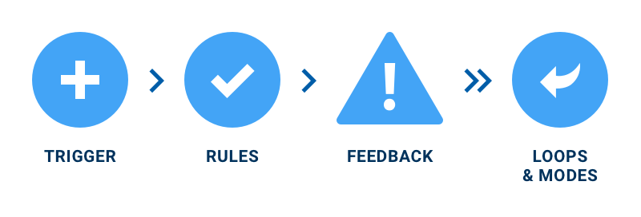

19-02-2020
Beroep: Sanne 't Hooft is een docent op de Hogeschool van Amsterdam. Zijn presentatie ging over het ontwerpen met CSS.
Definities Microinteracties
Sanne vertelde over de drie definities van microinteracties omschreven door Dan Saffer in Microinteractions (designing with details):
- 1. Signature moment in a digital product
- 2. Product based around one micro-interaction
- 3. People see interaction as a series of micro-interactions
Elementen van microtransacties
Het is volgens Sanne belangrijk om de behoefte goed te snappen.
Eerstejaars en werkwijze
Tijdens zijn presentatie liet hij werk zien van eerste jaars. Bij deze projecten waren beelden gemaakt d.m.v. alleen CSS.
Om zijn werkwijze te illustreren liet Sanne zijn interactie carroussel zien en hoe deze tot stand is gekomen. Tijdens projecten gaat hij door verschillende stages heen. Hij begint met het schetsen van het concept. Hierna gaat hij alles berekenen. Uiteindelijk 'codeert' hij het in DreamWeaver.